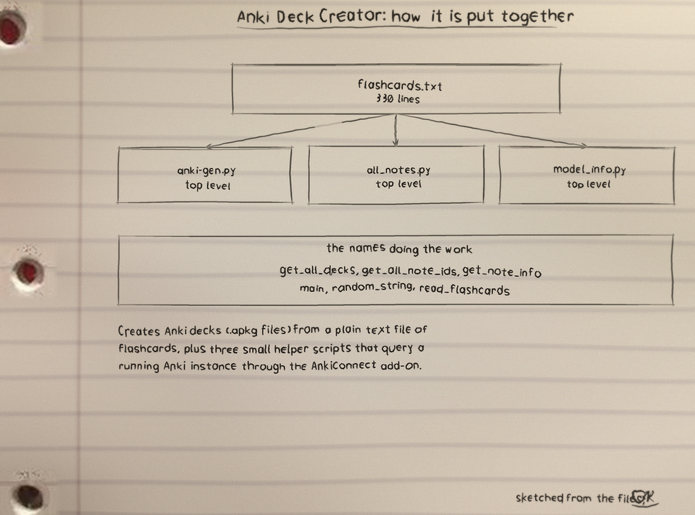
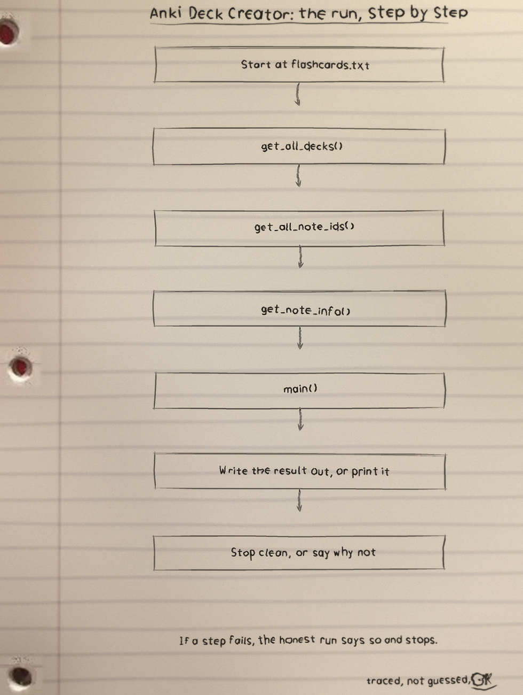
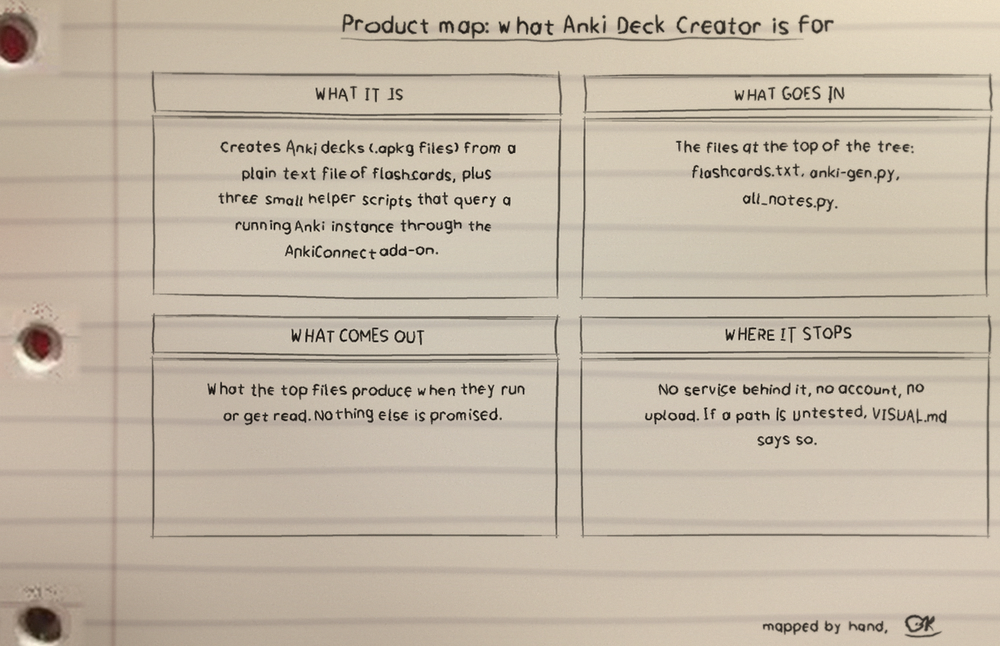

Run it
Running instructions · bay one holds the way in
The repo README has the exact commands for this one. The shape is the shape for most of my projects: clone it, read the top file first so you know what will happen, then run it on something you do not mind breaking.
$ git clone https://github.com/Epsilon0xCell/Anki-Deck-Creator.git $ cd Anki-Deck-Creator $ pip install -r requirements.txt $ python anki-gen.py
Generate a deck with python anki-gen.py, then import the resulting file into Anki. The script prints the random deck name and the .apkg file name it created.
What it is. Anki Deck Creator: 11 files, 744 counted lines across Text 332, Python 293, YAML 63. One job, done in the open, in files you can read. The biggest piece: flashcards.txt carries the most lines. If the project grows, that file is where the growth lands first, for better or worse.
The honest gap. No test files yet. That is the honest gap, and the roadmap in the visuals folder says what the first one should cover.
The input grammar
A question, an answer, then categories · bay two explains the format
read_flashcards in anki-gen.py strips blank lines, then reads each card as:
- A question line, ending with ?
- One answer line
- Zero or more category lines, which belong to that card and run until the next question line
The generated model has three fields: Question, Answer, and Categories (the category lines joined with commas).
The code, as it sits in the repo. From flashcards.txt, line 23 on. I did not tidy it for the page. What you see is what the file has.
checks balances What role does the bureaucracy play in government? Implementing policy policy bureaucracy What are the required documents for this unit? United States Constitution, Federalist 51, Federalist 70, Federalist 78 documents federalist What is the total number of representatives in the House? 435 representatives house representatives How often is the House of Representatives elected?
The sample material
55 cards in flashcards.txt · bay three parks the evidence
flashcards.txt holds the sample input: 55 cards about the branches of United States government.
The files that matter
| File | Lines |
|---|---|
| flashcards.txt | 330 |
| anki-gen.py | 114 |
| all_notes.py | 76 |
| model_info.py | 70 |
| .github/workflows/anki-decks-gen.yml | 63 |
| README.md | 56 |
Names doing the work: get_all_decks, get_all_note_ids, get_note_info, main, random_string, read_flashcards, get_model_id, get_model_info.
The helpers
all_notes.py, model_id.py, model_info.py · bay four asks a running Anki
anki-gen.py builds an .apkg deck from flashcards.txt using genanki. The deck name and the output file name are random strings, so each run produces a new file such as jTHjjbWTMJ.apkg.
all_notes.py prints every note in every deck as JSON, using AnkiConnect.
model_id.py prints the numeric ID of the model named Basic, using AnkiConnect.
model_info.py prints the ID, field names, and templates of the model named Basic, using AnkiConnect.
$ python all_notes.py $ python model_id.py $ python model_info.py
The helper scripts query AnkiConnect at http://localhost:8765 and query the Basic model by default. Requirements: Python 3, genanki for anki-gen.py, and requests plus Anki running with the AnkiConnect add-on for the helpers. Install both Python packages with pip install -r requirements.txt. If AnkiConnect cannot be reached, the helper scripts print a short message saying so instead of a traceback. To query a model other than Basic, edit the model_name value in model_id.py or model_info.py.
The automation
The crew who rebuild the set on every push · bay five names the workflow
.github/workflows/anki-decks-gen.yml: on every push to main, the GitHub workflow installs genanki, runs the generator (anki-gen.py), uploads the package as an artifact (uploads the .apkg as a workflow artifact), and attaches it to a release (creates a GitHub release with the .apkg attached).
Drawn by hand
The sheets · notebook paper, nothing drawn over the binder holes
I sketch my projects on notebook paper so I have to understand them well enough to draw them. The full set, with the counts and how they were counted, is the Anki-Deck-Creator-Visuals folder in the repo. Nothing is drawn over the binder holes. That is a rule, not a style. The visuals here are the redrawn by hand visuals folder note: architecture, flowchart, and product map sheets carried in this site's assets.


